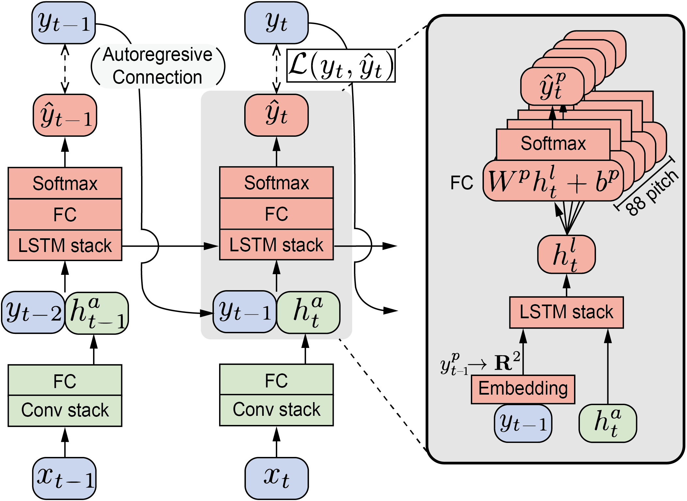

Recent advances in polyphonic piano transcription have been made primarily by a deliberate design of neural network architectures that detect different note states such as onset or sustain and model the temporal evolution of the states. The majority of them, however, use separate neural networks for each note state, thereby optimizing multipleloss functions, and also they handle the temporal evolution of note states by abstract connections between the state-wise neural networks or using a post-processing module. In this paper, we propose a unified neural network architecture where multiple note states are predicted as a softmax output with a single loss function and the temporal order is learned by an auto-regressive connection within the single neural network. This compact model allows to increase note states without architectural complexity. Using the MAESTRO dataset, we examine various combinations of multiple note states including on, onset, sustain, re-onset, offset, and off. We also show that the autoregressive module effectively learns inter-state dependency of notes. Finally, we show that our proposed model achieves performance comparable to state-of-the-arts with fewer parameters.
Demo
Synchrozied transciption result. Audio is playback of transcribed midi by Disklavier. SeungJin Cho: Chopin Scherzo in B flat minor Op. 31
[Original Source]
Realtime Demo of the system. Played by the Me(Taegyun) and my dear colleagues(Sangeon and Eunjin @ MACLAB).
Summary
We explored neural-network architecture for piano transcription.
We focused that frame-by-frame prediction could be easier if the prior note states are known.
To apply this, we explicitly informs the model by frame of the previous note state.
We also examined various representation type to represent note states.
Our main contributions are as follows:
We proposed autoregressive transcription model, which is online, simple and general architecture. We showed that the model reflect sequential dependency and have similar perfomance capacity compare to SOTA models
We showed that representing multiple note states with softmax and predict them with single network does not degrade the performance
Motivation
Most of NN based transciption algorithms are based on frame-by-frame model, which predict note activation at every frame.
Frame-by-frame prediction model
However, when each frame prediction is independently predicted, resulting posteriogram often contains blurry region.
prediction example
To overcome this problem, several methods were proposed, including post-processing with musical language model
[2, 4] or GAN based regularization[3].
We thought that thoses blurry region indicates uncentainty, and the decision would be easier if the model take account the situation of notes just before.
For example, in the following clip it is hard to transcribe notes if you hear only middle part of notes, but it becomes much easier if you listen it from beginning and take account which notes were played.
State conditioning example
We end up with the model with auto-regressive connection, which predict frame activation not only based on spectrogram but also previous note states.
Also, we also had to decide representation of note states. Since it is critial to employing addtional note states [1],
we also tried to adapt additional states (onset, offset, re-onset). Previous works usually represent multiple note states with multi binary labels
with branched network structure [1, 2], but we tried to represent all states with a single softmax, since they can be
regarded as mutually-exclusive, related class.
Methods
Auto-Regressive Model
Our proposed model follows stacked CNN-RNN architecture, similar to onsets and frames [1].
In our model, the previous note states are connatenated with CNN output, and feeded into RNN layers.
Abstract diagram of auto-regressive model

Unrolled model diagram at frame t. x indicates acoustic feature (mel-spectrogram) and y indicates label
Multi-State Representation
We tested five kinds of note state representations. From binary to five states, we subdivide the classes into more classes.
Especially, we added re-onset class, which is special case of onset while the note is sustained.
multi-state representations
Onsets and Frames[1] used two binary states and CNN-RNN stack for frame (note on) and onset, and
Kelz et al [2] used three branches to express three binary states (on, onset, offset).
Compare to previous researches, we simplified network architecture by combining notes states into a single one-hot vector.
abstact state representation comparision
Results
We evaluate our model with MAESTRO dataset.
First of all, our model produce much clearer posteriogram compare to non-AR algorithms. It shows that the auto-regressive connection
helps the model to learn sequential dependency. However, our model also have drawbacks when it fails to capture offset; it tends to prolong notes too much.
frame-probability comparision
Comparison between AR and non-AR model shows it clearly affect note onset/offset predictions. Employing more note states also have positive effects,
but the difference wasn't that large in note onset.
AR model comparison result
state representation comparision
Employing re-onset states also seems to have positive effect on retrieve repeated notes
detected onset activation. top: ground truth / middle: model with re-onset / bottom: model without reonset
Our best model also achieved similar accuarcy compare to offline (bidirectional) onsets and frames model.
We think that the auto-regressive connection compansates lack of backward information.
reimplementation comparision
We also tried beam-search decoding. Since high-dimensionality and multi-state of piano roll, it wasn't trivial to apply beam-search.
We proposed truncated pitch-wise beam-search, which only take account high-probable states and ignoring other pitches at time (see 3.5 in the paper). But it even always degrades the decoded results. We found that the model is poorly calibrated, which means that predicted frame-probability is not reliable.
error calibration curve
Conclusion
The onset state is critical to improving note onset scores and the offset and re-onset states help improving the note-with-offset score.
The auto-regressive MLM provides significantly higher accuracy on both note onset and offset estimation compared to its non-autoregressive version.
Our proposed model achieves transcription performance comparable to the state-of-the-art models evenwith the unidirectional RNN and fewer parameters.
Reference
[1] Curtis Hawthorne, Erich Elsen,
Jialin Song, Adam Roberts, Ian Simon, Colin Raffel, Jesse Engel, Sageev
Oore, Douglas Eck. “Onsets and Frames: Dual-Objective Piano Transcription”, 19th International Society for Music Information Retrieval
Conference, Paris, France, 2018.
[2] R. Kelz, S. Böck, and G. Widmer, “Deep polyphonic ADSR piano note transcription,” in Proc. of the 44th International Conference on Acoustics, Speech and Signal Processing (ICASSP).IEEE, May 2019, pp.246–250
[3] J. Kim and J. Bello, “Adversarial learning for improved onsets and frames music transcription,” in Proc. of 20th International Society for Music Information Retrieval Conference (ISMIR), 2019, pp. 670–677
[4] A. Ycart, A. McLeod, E. Benetos, and K. Yoshii, “Blending acoustic and language model predictions for automatic music transcription,” in Proc. of the 20th International Society for Music Information Retrieval Conference (ISMIR), 2019, pp. 454–461